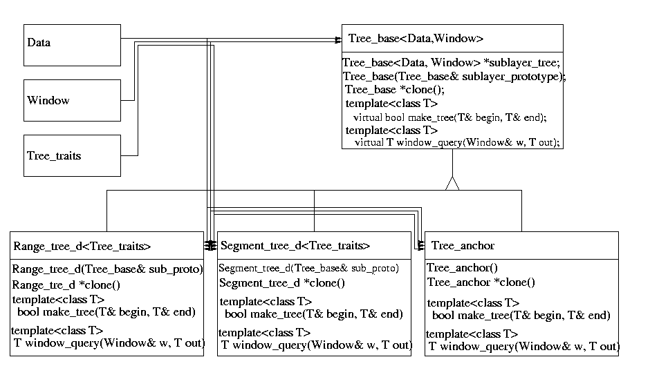
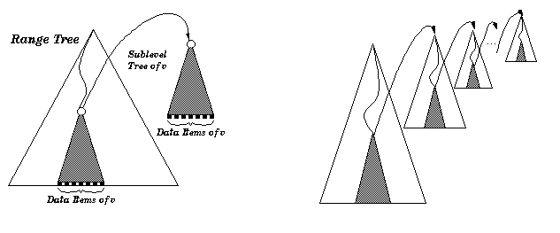
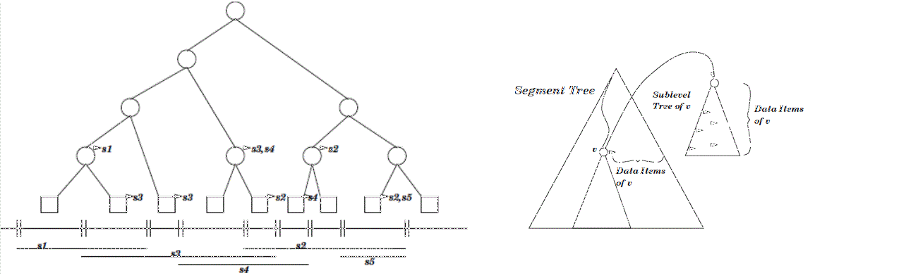

- Generated by
 1.17.0
1.17.0
|
CGAL 6.3 - dD Range and Segment Trees
|
This chapter presents the CGAL range tree and segment tree data structures.
This section presents d-dimensional range and segment trees. A one-dimensional range tree is a binary search tree on one-dimensional point data. Here we call all one-dimensional data types having a strict ordering (like integer and double) point data. d-dimensional point data are d-tuples of one-dimensional point data.
A one-dimensional segment tree is a binary search tree as well, but with one-dimensional interval data as input data. One-dimensional interval data is a pair (i.e., 2-tuple) (a,b), where a and b are one-dimensional point data of the same type and a< b. The pair (a,b) represents a half open interval [a,b). Analogously, a d-dimensional interval is represented by a d-tuple of one-dimensional intervals.
The input data type for a d-dimensional tree is a container class consisting of a d-dimensional point data type, interval data type or a mixture of both, and optionally a value type, which can be used to store arbitrary data. E.g., the d-dimensional bounding box of a d-dimensional polygon may define the interval data of a d-dimensional segment tree and the polygon itself can be stored as its value. An input data item is an instance of an input data type.
The range and segment tree classes are fully generic in the sense that they can be used to define multilayer trees. A multilayer tree of dimension (number of layers) d is a simple tree in the d-th layer, whereas the k-th layer, 1 <= k <= d-1, of the tree defines a tree where each (inner) vertex contains a multilayer tree of dimension d-k+1. The k-1-dimensional tree which is nested in the k-dimensional tree ( T) is called the sublayer tree (of T). For example, a d-dim tree can be a range tree on the first layer, constructed with respect to the first dimension of d-dimensional data items. On all the data items in each subtree, a (d-1)-dimensional tree is built, either a range or a segment tree, with respect to the second dimension of the data items. And so on.
The figures in Sections Range Trees and Segment Trees illustrate the means of a sublayer tree graphically.
After creation of the tree, further insertions or deletions of data items are disallowed. The tree class does neither depend on the type of data nor on the concrete physical representation of the data items. E.g., let a multilayer tree be a segment tree for which each vertex defines a range tree. We can choose the data items to consist of intervals of type double and the point data of type integer. As value type we can choose string.
For this generality we have to define what the tree of each dimension looks like and how the input data is organized. For dimension k, 1 < k < 4, CGAL provides ready-to-use range and segment trees that can store k-dimensional keys (intervals resp.). Examples illustrating the use of these classes are given in Sections Example for Range Tree on Map-like Data and Example for Segment Tree on Map-like Data. The description of the functionality of these classes as well as the definition of higher dimensional trees and mixed multilayer trees is given in the reference manual.
In the following two sections we give short definitions of the version of the range tree and segment tree implemented here together with some examples. The presentation closely follows [1].
In order to be able to define a multilayer tree we first designed the range and segment tree to have a template argument defining the type of the sublayer tree. With this sublayer tree type information the sublayers could be created. This approach lead to nested template arguments, since the sublayer tree can again have a template argument defining the sublayer. Therefore, the internal class and function identifiers got longer than a compiler-dependent limit. This happened already for d=2.
Therefore, we chose another, object oriented, design. We defined a pure virtual base class called Tree_base from which we derived the classes Range_tree_d and Segment_tree_d. The constructor of these classes expects an argument called sublayer_prototype of type Tree_base. Since class Range_tree_d and class Segment_tree_d are derived from class Tree_base, one can use an instantiation of class Range_tree_d or class Segment_tree_d as constructor argument. This argument defines the sublayer tree of the tree. E.g., you can construct a Range_tree_d with an instantiation of class Segment_tree_d as constructor argument. You then have defined a range tree with a segment tree as sublayer tree. Since both classes Range_tree_d and Segment_tree_d expect a sublayer tree in their constructor we had to derive a third class called Tree_anchor from class Tree_base which does not expect a constructor argument. An instantiation of this class is used as constructor argument of class Range_tree_d or Segment_tree_d in order to stop the recursion.
All classes provide a clone() function which returns an instance (a copy) of the same tree type. The clone() function of the sublayer_prototype is called in the construction of the tree. In case that the sublayer tree again has a sublayer, it also has a sublayer_prototype which is also cloned and so on. Thus, a call to the clone() function generates a sublayer tree which has the complete knowledge about its sublayer tree.
The trees allow to perform window queries, enclosing queries, and inverse range queries on the keys. Clearly, an inverse range query makes only sense in the segment tree. In order to perform an inverse range query, a range query of \( \epsilon\) width has to be performed. We preferred not to offer an extra function for this sort of query, since the inverse range query is a special case of the range query. Furthermore, offering an inverse range query in the segment tree class implies offering this function also in the range tree class and having an extra item in the traits class that accesses the inverse range query point.
The trees are templatized with three arguments: Data, Window and Traits. Type Data defines the input data type and type Window defines the query window type. The tree uses a well defined set of functions in order to access data. These functions have to be provided by class Traits.
The design partly follows the prototype design pattern in [2]. In comparison to our first approach using templates we want to note the following: In this approach the sublayer type is defined in use of object oriented programming at run time, while in the approach using templates, the sublayer type is defined at compile time.
The runtime overhead caused in use of virtual member functions in this object oriented design is negligible since all virtual functions are non trivial.
The design concept is illustrated in the figure below.

Figure 102.1 Design of the range and segment tree data structure. The symbol triangle means that the lower class is derived from the upper class.
E.g. in order to define a two dimensional multilayer tree, which consists of a range tree in the first dimension and a segment tree in the second dimension we proceed as follows: We construct an object of type Tree_anchor which stops the recursion. Then we construct an object of type Segment_tree_d, which gets as prototype argument our object of type Tree_anchor. After that, we define an object of type Range_tree_d which is constructed with the object of type Segment_tree_d as prototype argument. The following piece of code illustrates the construction of the two-dimensional multilayer tree.
Here, class Tree_Anchor, Segment_Tree_d, andRange_Tree_d are defined by typedefs:
Class Tree_base and class Tree_anchor get two template arguments: a class Data which defines the type of data that is stored in the tree, and a class Window which defines the type of a query range. The derived classes Range_tree_d and Segment_tree_d additionally get an argument called Tree_traits which defines the interface between the Data and the tree. Let the Data type be a d-dimensional tuple, which is either a point data or an interval data in each dimension. Then, the class Tree_traits provides accessors to the point (resp. interval) data of that tree layer and a compare function. Remind our example of the two-dimensional tree which is a range tree in the first dimension and a segment tree in the second dimension. Then, the Tree_traits class template argument of class Segment_tree_d defines an accessor to the interval data of the Data, and the Tree_traits class template argument of class Range_tree_d defines an accessor to the point data of Data. An example implementation for these classes is listed below.
Now let us have a closer look on how a multilayer tree is built. In case of creating a d-dimensional tree, we handle a sequence of arbitrary data items, where each item defines a d-dimensional interval, point or other object. The tree is constructed with an iterator over this structure. In the i-th layer, the tree is built with respect to the data slot that defines the i-th dimension. Therefore, we need to define which data slot corresponds to which dimension. In addition we want our tree to work with arbitrary data items. This requires an adaptor between the algorithm and the data item. This is resolved by the use of traits classes, implemented in form of a traits class using function objects. These classes provide access functions to a specified data slot of a data item. A d-dimensional tree is then defined separately for each layer by defining a traits class for each layer.
A one-dimensional range tree is a binary search tree on one-dimensional point data. The point data of the tree is stored in the leaves. Each inner vertex stores the highest entry of its left subtree. The version of a range tree implemented here is static, which means that after construction of the tree, no elements be inserted or deleted. A d-dimensional range tree is a binary leaf search tree according to the first dimension of the d-dimensional point data, where each vertex contains a (d-1)-dimensional search tree of the points in the subtree (sublayer tree) with respect to the second dimension. See [1] and [3] for more detailed information.
A d-dimensional range tree can be used to determine all d-dimensional points that lie inside a given d-dimensional interval (window_query).
The pictures below show a two-dimensional and a d-dimensional range tree.

Figure 102.2 A two and a d-dimensional range tree.
The 2-dimensional tree is a binary search tree on the first dimension. Each sublayer tree of a vertex v is a binary search tree on the second dimension. The data items in a sublayer tree of v are all data items of the subtree of v.
For the d-dimensional range tree, the figure shows one sublayer tree for each layer of the tree.
The tree can be built in \(O(n\log^{d-1} n)\) time and needs \(O(n\log^{d-1} n)\) space. The d-dimensional points that lie in the d-dimensional query interval can be reported in \(O(\log^dn+k)\) time, where n is the total number of points and k is the number of reported points.
The following example program uses the predefined Range_tree_2 data structure together with the predefined traits class Range_tree_map_traits_2 which has two template arguments specifying the type of the point data in each dimension (Cartesian<double>) and the value type of the 2-dimensional point data (char). Therefore the Range_tree_2 is defined on 2-dimensional point data each of which is associated with a character. Then, a few data items are created and put into a list. After that the tree is constructed according to that list, a window query is performed, and the query elements are given out.
This example illustrates the use of the range tree on 2-dimensional point data (no value is associated to a data item). After the definition of the tree, some input data items are created and the tree is constructed according to the input data items. After that, a window query is performed and the query elements are given to standard out.
A segment tree is a static binary search tree for a given set of coordinates. The set of coordinates is defined by the endpoints of the input data intervals. Any two adjacent coordinates build an elementary interval. Every leaf corresponds to an elementary interval. Inner vertices correspond to the union of the subtree intervals of the vertex. Each vertex or leaf v contains a sublayer type (or a list, if it is one-dimensional) that will contain all intervals I, such that I contains the interval of vertex v but not the interval of the parent vertex of v.
A d-dimensional segment tree can be used to solve the following problems:
An example of a one-dimensional segment tree and an example of a two-dimensional segment tree are shown below.

Figure 102.3 A one and a two dimensional segment tree
For the one-dimensional segment tree the segments and the corresponding elementary intervals are shown below the tree. The arcs from the nodes point to their subsets.
For the two-dimensional segment tree we see that the first layer of the tree is built according to the elementary intervals of the first dimension. Each sublayer tree of a vertex v is a segment tree according to the second dimension of all data items of v.
The tree can be built in \(O(n\log^{d} n)\) time and needs \(O(n\log^{d} n)\) space. The processing time for inverse range queries in an d-dimensional segment tree is \(O(\log^d n +k)\) time, where n is the total number of intervals and k is the number of reported intervals.
One possible application of a two-dimensional segment tree is the following. Given a set of convex polygons in two-dimensional space (Polygon_2), we want to determine all polygons that intersect a given rectangular query window. Therefore, we define a two-dimensional segment tree, where the two-dimensional interval of a data item corresponds to the bounding box of a polygon and the value type corresponds to the polygon itself. The segment tree is created with a sequence of all data items, and a window query is performed. The polygons of the resulting data items are finally tested independently for intersections.
The following example program uses the predefined Segment_tree_2 data structure together with the predefined traits class Segment_tree_map_traits_2 which has two template arguments specifying the type of the point data in each dimension (Cartesian<double>) and the value type of the 2-dimensional point data (char). Therefore the Segment_tree_2 is defined on 2-dimensional point data (Point_2<Cartesian<double> >) each of which is associated with a character. Then, a few data items are created and put into a list. After that the tree is constructed according to that list, a window query is performed, and the query elements are given out.
This example illustrates the use of the predefined segment tree on 3-dimensional interval data (with no value associated). After the definition of the traits type and tree type, some intervals are constructed and the tree is built according to the intervals. Then, a window query is performed and the query elements are given out.